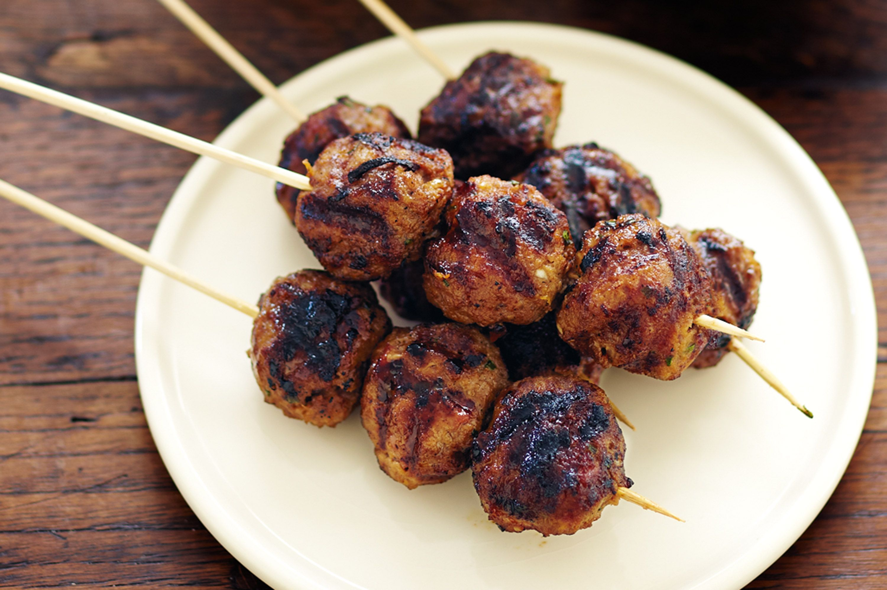

Meowscular Chef's Platter: Roast Meatball Skewer

Image source
Tasty and cheesy meatball skewers
Serves: 6
Ingredients:
- 2 lb or 1 kg minced meat (beef/pork)
- 1 oz or 32 g breadcrumbs
- 1 egg
- 1 tbsp chilli powder
- 3 oz or 80 g cheese
- salt, pepper
Steps:
- Grate cheese on coarse grater.
- Put meat in large bowl. Add breadcrumbs, grated cheese, egg, chilli powder, salt and pepper. Mix everything together and make small bite-sized meatballs.
- Add oil to a non-stick pan. Fry until golden-brown on the outside.
- Put in oven or microwave until cooked through.
- Skewer 3-4 meatballs per portion and serve.
Back to main